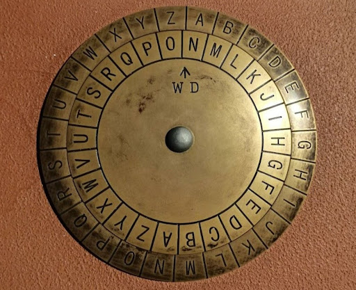

Историческая справка:
Знаменитый итальянский архитектор Леон Батиста Альберти в своем труде «Трактат о шифрах» (1466 г.) впервые предложил шифр многоалфавитной замены. Предложенный в работе шифр Альберти называл шифром «достойным королей».
Шифр основывался на использовании шифровального диска. Это устройство представляло собой пару дисков разного диаметра. Неподвижным был внешний диск, а подвижным внутренний.
Сам процесс шифрования заключался в нахождении буквы открытого текста на внешнем диске и замене её на букву из внутреннего диска, стоящую под ней, то есть производилась простая замена. Однако подвижность внутреннего диска позволяла производить с определённой частотой сдвиг, например, через каждые 3-4 слова, и шифрование происходило уже по новому шифралфавиту. Таким образом, реализовывалась многоалфавитная замена, затрудняющая частотный анализ.
Диск Альберти реализует несколько режимов шифрования, в данном боте рассмотрен один из них.
